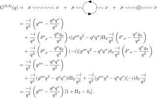
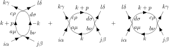

物理の本
詳細pdf版
Peskin 1
Peskin 2
Peskin 3
Peskin 4
Peskin 5
Peskin 6
Peskin 7
Peskin 8
Peskin & Schroeder. An Introduction to Quantum Field Theory
Chapter 7: Radiative Corrections: Some Formal Developments
7.2 The LSZ Reduction formula
Chapter 10の繰り込みで使用するので，しっかり理解しておく必要がある
(7.45)
直前にある4点相関函数について証明する．LSZ簡約公式(7.42)から
(7.44)とその後の式から
以上から，
Chapter 10: Systematics of Renormalization
Callan-Symanzik方程式を使ってβ函数を求める．counter termの計算は積分の発散項のみ見ればいいので楽
10.3 Renormalization of Quantum Electrodynamics
(10.46)
(10.39)で定義したように，
Chapter 12: The Renormalization Group
12.1 Wilson's Approach to Renormalization Theory
(12.10)
(12.8)から
\begin{align*}
\braket{ \hat\phi(x) \hat\phi(x) }
&= \int \frac{d^dk}{(2\pi)^d} \frac{d^dp}{(2\pi)^d} e^{-i(k+p) \cdot x}
\braket{ \hat\phi(k) \hat\phi}(p) \\
%
&= \int \frac{d^dk}{(2\pi)^d} \frac{d^dp}{(2\pi)^d} e^{-i(k+p) \cdot x}
\frac{(2\pi)^d}{k^2} \mathop{\delta^{(d)}}(k+p) \Theta(k) \\
%
&= \int_{b\Lambda \leq \lvert k \rvert < \Lambda} \frac{d^dk}{(2\pi)^d} \frac{1}{k^2} .
\end{align*}
よって，
\begin{align*}
- \int d^dx \, \frac{\lambda}{4} \phi(x) \phi(x)
\braket{ \hat\phi(x) {\hat\phi}(x) }
&= - \int d^dx \, \frac{\lambda}{4} \phi(x) \phi(x) \int_{b\Lambda \leq \lvert k \rvert < \Lambda} \frac{d^dk}{(2\pi)^d} \frac{1}{k^2} \\
%
&= - \frac{\mu}{2} \int d^dx \, \phi(x) \phi(x) \\
%
&= - \frac{\mu}{2} \int d^dx \,
\int \frac{d^dk}{(2\pi)^d} \frac{d^dp}{(2\pi)^d} e^{-i(k+p) \cdot x} \phi(k) \phi(p) \\
%
&= - \frac{\mu}{2} \int \frac{d^dk}{(2\pi)^d} \frac{d^dp}{(2\pi)^d} \mathop{\delta^{(d)}}(k+p) \phi(k) \phi(p) \\
&= - \frac{\mu}{2} \int \frac{d^dk}{(2\pi)^d} \phi(k) \phi(-k) .
\end{align*}
(12.14)
(12.8)から
\begin{align*}
\braket{ {\hat\phi}(x) {\hat\phi}(y) }
&= \int \frac{d^dk}{(2\pi)^d} \frac{d^dp}{(2\pi)^d} e^{-i(k \cdot x + p \cdot y)}
\braket{ {\hat\phi}(k) {\hat\phi}(p) } \\
%
&= \int \frac{d^dk}{(2\pi)^d} \frac{d^dp}{(2\pi)^d} e^{-i(k \cdot x + p \cdot y)}
\frac{(2\pi)^d}{k^2} \mathop{\delta^{(d)}}(k+p) \Theta(k) \\
%
&= \int_{b\Lambda \leq \lvert k \rvert < \Lambda} \frac{d^dk}{(2\pi)^d} e^{-ik \cdot (x-y)} \frac{1}{k^2} .
\end{align*}
$\exp (-\lambda \phi^2 \hat\phi^2 / 4)$の2次の展開
\[
\frac{1}{2}
\int d^dx \, \frac{\lambda}{4} \phi(x) \phi(x) \hat\phi(x) \hat\phi(x)
\int d^dy \, \frac{\lambda}{4} \phi(y) \phi(y) \hat\phi(y) \hat\phi(y)
\]
を考える．$\hat\phi$の縮約には
および
の2通りがある．2つ目の縮約は2通りあるので，
\begin{align*}
& \frac{\lambda^2}{16} \int d^dx \,d^dy \, \phi(x) \phi(x) \phi(y) \phi(y)
\braket{ {\hat\phi}(x) {\hat\phi}(y) } \braket{ {\hat\phi}(x) {\hat\phi}(y) } \\
%
&= \frac{\lambda^2}{16} \int d^dx \, d^dy \, \phi^2(x) \phi^2(y)
\int\limits_{\substack{b\Lambda \leq \lvert k \rvert < \Lambda \\ b\Lambda \leq \lvert p \rvert < \Lambda}} \frac{d^dk}{(2\pi)^d} \frac{d^dp}{(2\pi)^d}
e^{-i(k+p) \cdot (x-y)} \frac{1}{k^2} \frac{1}{p^2} \\
%
&= \frac{\lambda^2}{16}
\int\limits_{\substack{b\Lambda \leq \lvert k \rvert < \Lambda \\ b\Lambda \leq \lvert p \rvert < \Lambda}} \frac{d^dk}{(2\pi)^d} \frac{d^dp}{(2\pi)^d} \frac{1}{k^2} \frac{1}{p^2}
\int d^dx \, \phi^2(x) e^{-i(k+p) \cdot x} \int d^dy \, \phi^2(y) e^{i(k+p) \cdot y} \\
%
&= \frac{\lambda^2}{16}
\int\limits_{\substack{b\Lambda \leq \lvert k \rvert < \Lambda \\ b\Lambda \leq \lvert p \rvert < \Lambda}} \frac{d^dk}{(2\pi)^d} \frac{d^dp}{(2\pi)^d} \frac{1}{k^2} \frac{1}{p^2}
\mathcal{F}[\phi^2](-k-p) \mathcal{F}[\phi^2](k+p) \\
%
&= \frac{\lambda^2}{16}
\int\limits_{\substack{b\Lambda \leq \lvert k \rvert < \Lambda \\ b\Lambda \leq \lvert p \rvert < \Lambda}} \frac{d^dk}{(2\pi)^d} \frac{d^dp}{(2\pi)^d} \frac{1}{k^2} \frac{1}{p^2}
\left\lvert \mathcal{F}[\phi^2](k+p) \right\rvert^2 .
\end{align*}
$\phi$の運動量に関する条件から，$\mathcal{F}[\phi^2](k+p) \approx \mathcal{F}[\phi^2](0) \mathop{\delta^{(d)}}(k+p)$．
よって，
\begin{align*}
&\approx \frac{1}{(2\pi)^d} \frac{\lambda^2}{16}
\int\limits_{b\Lambda \leq \lvert k \rvert < \Lambda} \frac{d^dk}{(2\pi)^d} \left( \frac{1}{k^2} \right)^2
\left\lvert \mathcal{F}[\phi^2](0) \right\rvert^2 \\
%
&\approx \frac{\lambda^2}{16}
\int\limits_{b\Lambda \leq \lvert k \rvert < \Lambda} \frac{d^dk}{(2\pi)^d} \left( \frac{1}{k^2} \right)^2
\int_{-\infty}^\infty \frac{d^dp}{(2\pi)^d} \, \left\lvert \mathcal{F}[\phi^2](p) \right\rvert^2 \\
%
&= \frac{\lambda^2}{16}
\int\limits_{b\Lambda \leq \lvert k \rvert < \Lambda} \frac{d^dk}{(2\pi)^d} \left( \frac{1}{k^2} \right)^2
\left\lVert \mathcal{F}[\phi^2] \right\rVert^2 \\
%
&= \frac{\lambda^2}{16}
\int\limits_{b\Lambda \leq \lvert k \rvert < \Lambda} \frac{d^dk}{(2\pi)^d} \left( \frac{1}{k^2} \right)^2
\left\lVert \phi^2 \right\rVert^2 \\
%
&= \frac{\lambda^2}{16}
\int\limits_{b\Lambda \leq \lvert k \rvert < \Lambda} \frac{d^dk}{(2\pi)^d} \left( \frac{1}{k^2} \right)^2
\int d^dx \, \phi^4(x) \\
%
&= - \frac{1}{4!} \int d^dx \, \zeta \phi^4 .
\end{align*}
12.2 The Callan-Symanzik Equation
(12.52)
$n$頂点のGreen函数を考える．(7.42)(12.35)から
となる（くりこみした量でダイアグラムを計算するので，(7.45)の右辺の$\sqrt{Z}$は不要）．
tree-levelは，
1PI-loopは，(10.20)などで計算したように，$\log (-p^2)$の発散を持つ：
vertex countertermは，
運動量$p_i$の外線に対するexternal leg correctionは
となる（$g^1$の項のみ考えるので，$i$について和を取れば良い）．
(12.57)
$G^{(2, 0)}(p)$を求める．電子の自己エネルギー(7.15)を使えば(12.49)と同様に
(12.50)と同様に，Callan-Syamzik方程式から
\[ - \frac{i}{\cancel{p}} M \frac{\partial}{\partial M} \delta_2 + 2 \gamma_2 \frac{i}{\cancel{p}} = 0 \]
なので
\[ \gamma_2 = \frac{1}{2} M \frac{\partial}{\partial M} \delta_2 . \]
$G^{(0, 2)}(q)$を求める．真空偏極(7.71)(7.73)を使えば(12.49)と同様に

(12.50)と同様に，Callan-Syamzik方程式から
\[ - M \frac{\partial}{\partial M} \delta_3 + 2 \gamma_3 = 0 \]
なので
\[ \gamma_3 = \frac{1}{2} M \frac{\partial}{\partial M} \delta_3 . \]
(12.58)
$G^{(2,1)}(p_1, p_2, q)$を求める．頂点補正(6.38)を使えば(12.52)と同様に
(12.53)と同様に，Callan-Syamzik方程式から
\[ M \frac{\partial}{\partial M} (\delta_1 - 2\delta_2 - \delta_3) + \frac{\beta}{e} + 2 \gamma_2 + \gamma_3 = 0 . \]
(12.57)を代入して
\[ \beta = e M \frac{\partial}{\partial M} \left( - \delta_1 + \delta_2 + \frac{\delta_3}{2} \right) . \]
Problem 12.2: Beta function of the Gross-Neveu model
Gross-Neveu模型は
\[ \mathcal{L} = \sum_{i=1}^N \bar\psi_i (i\cancel\partial) \psi_i + \frac{g^2}{2} \left( \sum_{i=1}^N \bar\psi_i \psi_i \right) \]
で与えられる．$d = 2$のDirac行列は
\[
(\gamma^0)_{\alpha\beta} =
\begin{pmatrix}
& -i \\
i &
\end{pmatrix}
, \quad
(\gamma^1)_{\alpha\beta} =
\begin{pmatrix}
& i \\
i &
\end{pmatrix}
\]
である（スピノルの添字を$\alpha = 0, 1$などのギリシャ文字で表す）．
伝播函数は
で与えられる．ガンマ行列は対角成分を持たないので，$\alpha = \beta$なら伝播函数は$0$である．
4点相関函数
を求める．(4.31)から，1次の展開は
\begin{align*}
& \bra{0} T \{ \psi_{i\alpha}(x_1) \psi_{j\beta}(x_2) \bar\psi_{k\gamma}(x_3) \bar\psi_{l\delta}(x_4)
\left( i \frac{g^2}{2} \right) \int d^4x \sum_{mn} \sum_{\rho\sigma} \bar\psi_{m\rho}(x) \psi_{m\rho}(x) \bar\psi_{n\sigma}(x) \psi_{n\sigma}(x) \} \ket{0}
\end{align*}
となる．縮約の方法には4通りある：
- なら
\[
m=i , \quad m=k , \quad \rho\neq\alpha , \quad \rho\neq\gamma ; \quad
n=j , \quad n=l , \quad \sigma\neq\beta , \quad \sigma\neq\delta
\quad \therefore \quad \delta_{ik}\delta_{jl}\delta_{\alpha\gamma}\delta_{\beta\delta} .
\]
- なら
\[
m=j , \quad m=l , \quad \rho\neq\beta , \quad \rho\neq\delta ; \quad
n=i , \quad n=k , \quad \sigma\neq\alpha , \quad \sigma\neq\gamma
\quad \therefore \quad \delta_{ik}\delta_{jl}\delta_{\alpha\gamma}\delta_{\beta\delta} .
\]
- なら
\[
m=i , \quad m=l , \quad \rho\neq\alpha , \quad \rho\neq\delta ; \quad
n=j , \quad n=k , \quad \sigma\neq\beta , \quad \sigma\neq\gamma
\quad \therefore \quad \delta_{il}\delta_{jk}\delta_{\alpha\delta}\delta_{\beta\gamma} .
\]
- なら
\[
m=j , \quad m=k , \quad \rho\neq\beta , \quad \rho\neq\gamma ; \quad
n=i , \quad n=l , \quad \sigma\neq\alpha , \quad \sigma\neq\delta
\quad \therefore \quad \delta_{il}\delta_{jk}\delta_{\alpha\delta}\delta_{\beta\gamma} .
\]
以上から，
相殺項は
$\delta_f$を求める．
なので，$\delta_f = 0$．
$\delta_g$を求める．頂点の1ループは

から成る．
$\log (-p^2)$の発散項にのみ興味があるので，それ以外の項は無視する．
1つ目は
\begin{align*}
V_s &= - \frac{(ig^2)^2}{2} \sum_{abcd} \sum_{\mu\nu\rho\sigma} \int \frac{d^dk}{(2\pi)^d}
\left( \delta_{kc} \delta_{ld} \delta_{\gamma\rho} \delta_{\delta\sigma} + \delta_{kd} \delta_{lc} \delta_{\gamma\sigma} \delta_{\delta\rho} \right) \\
& \quad\times \left( \frac{i}{\cancel{k} + \cancel{p}} \right)_{\rho\mu} \delta_{ac}
\left( \frac{i}{-\cancel{k}} \right)_{\sigma\nu} \delta_{bd}
\left( \delta_{ia} \delta_{jb} \delta_{\alpha\mu} \delta_{\beta\nu} + \delta_{ib} \delta_{ja} \delta_{\alpha\nu} \delta_{\beta\mu} \right) .
\end{align*}
和を計算すれば
\begin{align*}
& \sum_{abcd} \sum_{\mu\nu\rho\sigma}
\left( \delta_{kc} \delta_{ld} \delta_{\gamma\rho} \delta_{\delta\sigma} + \delta_{kd} \delta_{lc} \delta_{\gamma\sigma} \delta_{\delta\rho} \right)
\left( \frac{i}{\cancel{k} + \cancel{p}} \right)_{\rho\mu} \delta_{ac}
\left( \frac{i}{-\cancel{k}} \right)_{\sigma\nu} \delta_{bd} \\
& \quad\times \left( \delta_{ia} \delta_{jb} \delta_{\alpha\mu} \delta_{\beta\nu} + \delta_{ib} \delta_{ja} \delta_{\alpha\nu} \delta_{\beta\mu} \right) \\
%
%
&= \sum_{ab} \sum_{\mu\nu\rho\sigma}
\left( \delta_{ka} \delta_{lb} \delta_{\gamma\rho} \delta_{\delta\sigma} + \delta_{kb} \delta_{la} \delta_{\gamma\sigma} \delta_{\delta\rho} \right)
\left( \frac{i}{\cancel{k} + \cancel{p}} \right)_{\rho\mu}
\left( \frac{i}{-\cancel{k}} \right)_{\sigma\nu}
\\
& \quad\times \left( \delta_{ia} \delta_{jb} \delta_{\alpha\mu} \delta_{\beta\nu} + \delta_{ib} \delta_{ja} \delta_{\alpha\nu} \delta_{\beta\mu} \right) \\
%
%
&= \sum_{ab} \sum_{\mu\nu\rho\sigma}
\left( \delta_{ka} \delta_{lb} \delta_{\gamma\rho} \delta_{\delta\sigma} \right)
\left( \frac{i}{\cancel{k} + \cancel{p}} \right)_{\rho\mu}
\left( \frac{i}{-\cancel{k}} \right)_{\sigma\nu}
\left( \delta_{ia} \delta_{jb} \delta_{\alpha\mu} \delta_{\beta\nu} \right) \\
%
& \quad + \sum_{ab} \sum_{\mu\nu\rho\sigma}
\left( \delta_{ka} \delta_{lb} \delta_{\gamma\rho} \delta_{\delta\sigma} \right)
\left( \frac{i}{\cancel{k} + \cancel{p}} \right)_{\rho\mu}
\left( \frac{i}{-\cancel{k}} \right)_{\sigma\nu}
\left( \delta_{ib} \delta_{ja} \delta_{\alpha\nu} \delta_{\beta\mu} \right) \\
%
& \quad + \sum_{ab} \sum_{\mu\nu\rho\sigma}
\left( \delta_{kb} \delta_{la} \delta_{\gamma\sigma} \delta_{\delta\rho} \right)
\left( \frac{i}{\cancel{k} + \cancel{p}} \right)_{\rho\mu}
\left( \frac{i}{-\cancel{k}} \right)_{\sigma\nu}
\left( \delta_{ia} \delta_{jb} \delta_{\alpha\mu} \delta_{\beta\nu} \right) \\
%
& \quad + \sum_{ab} \sum_{\mu\nu\rho\sigma}
\left( \delta_{kb} \delta_{la} \delta_{\gamma\sigma} \delta_{\delta\rho} \right)
\left( \frac{i}{\cancel{k} + \cancel{p}} \right)_{\rho\mu}
\left( \frac{i}{-\cancel{k}} \right)_{\sigma\nu}
\left( \delta_{ib} \delta_{ja} \delta_{\alpha\nu} \delta_{\beta\mu} \right) \\
%
%
&= \left( \delta_{ik} \delta_{jl} \right) \left( \frac{1}{\cancel{k} + \cancel{p}} \right)_{\gamma\alpha} \left( \frac{1}{\cancel{k}} \right)_{\delta\beta}
+ \left( \delta_{il} \delta_{jk} \right) \left( \frac{1}{\cancel{k} + \cancel{p}} \right)_{\gamma\beta} \left( \frac{1}{\cancel{k}} \right)_{\delta\alpha} \\
%
& \quad + \left( \delta_{il} \delta_{jk} \right) \left( \frac{1}{\cancel{k} + \cancel{p}} \right)_{\delta\alpha} \left( \frac{1}{\cancel{k}} \right)_{\gamma\beta}
+ \left( \delta_{ik} \delta_{jl} \right) \left( \frac{1}{\cancel{k} + \cancel{p}} \right)_{\delta\beta} \left( \frac{1}{\cancel{k}} \right)_{\gamma\alpha}
\end{align*}
なので，
\begin{align*}
V_s &= g^4 \left( \delta_{ik} \delta_{jl} \right) \int \frac{d^dk}{(2\pi)^d}
\frac{(\cancel{k} + \cancel{p})_{\gamma\alpha}(\cancel{k})_{\delta\beta} + (\cancel{k})_{\gamma\alpha}(\cancel{k} + \cancel{p})_{\delta\beta}}{2k^2(k+p)^2} \\
& \quad + g^4 \left( \delta_{il} \delta_{jk} \right) \int \frac{d^dk}{(2\pi)^d}
\frac{(\cancel{k} + \cancel{p})_{\gamma\beta}(\cancel{k})_{\delta\alpha} + (\cancel{k})_{\gamma\beta}(\cancel{k} + \cancel{p})_{\delta\alpha}}{k^2(k+p)^2} \\
%
&\sim g^4 \delta_{ik} \delta_{jl} (\gamma^\mu)_{\gamma\alpha}(\gamma^\nu)_{\delta\beta} \int \frac{d^dk}{(2\pi)^d} \frac{k_\mu k_\nu}{k^2(k+p)^2}
+ g^4 \delta_{il} \delta_{jk} (\gamma^\mu)_{\gamma\beta}(\gamma^\nu)_{\delta\alpha} \int \frac{d^dk}{(2\pi)^d} \frac{k_\mu k_\nu}{k^2(k+p)^2} \\
%
&= g^4 \left[ \delta_{ik} \delta_{jl} (\gamma^\mu)_{\gamma\alpha}(\gamma^\nu)_{\delta\beta}
+ \delta_{il} \delta_{jk} (\gamma^\mu)_{\gamma\beta}(\gamma^\nu)_{\delta\alpha} \right]
\int \frac{d^dk}{(2\pi)^d} \frac{1}{k^2(k+p)^2} \frac{k^2 g_{\mu\nu}}{d} \\
%
&= g^4 \left[ \delta_{ik} \delta_{jl} (\gamma^\mu)_{\gamma\alpha}(\gamma_\mu)_{\delta\beta}
+ \delta_{il} \delta_{jk} (\gamma^\mu)_{\gamma\beta}(\gamma_\mu)_{\delta\alpha} \right]
\frac{1}{d} \int \frac{d^dk}{(2\pi)^d} \frac{1}{(k+p)^2} \\
%
&= g^4 \left[ \delta_{ik} \delta_{jl} (\gamma^\mu)_{\gamma\alpha}(\gamma_\mu)_{\delta\beta}
+ \delta_{il} \delta_{jk} (\gamma^\mu)_{\gamma\beta}(\gamma_\mu)_{\delta\alpha} \right]
\frac{1}{d} \int \frac{d^dk}{(2\pi)^d} \frac{1}{k^2} ,
\end{align*}
$k_\mu k_\nu$の変換に(A.41)を使った．
2つ目は
\begin{align*}
V_t &= (ig^2)^2 \sum_{abcd} \sum_{\mu\nu\rho\sigma} \int \frac{d^dk}{(2\pi)^d}
\left( \delta_{ik} \delta_{ac} \delta_{\alpha\gamma} \delta_{\mu\rho} + \delta_{ic} \delta_{ak} \delta_{\alpha\rho} \delta_{\mu\gamma} \right) \\
& \quad\times \left( \frac{1}{\cancel{k} + \cancel{p}} \right)_{\sigma\rho} \delta_{cd}
\left( \frac{1}{\cancel{k}} \right)_{\mu\nu} \delta_{ab}
\left( \delta_{jl} \delta_{db} \delta_{\beta\delta} \delta_{\sigma\nu} + \delta_{jb} \delta_{dl} \delta_{\beta\nu} \delta_{\sigma\delta} \right) .
\end{align*}
和を計算すれば
\begin{align*}
& \sum_{abcd} \sum_{\mu\nu\rho\sigma}
\left( \delta_{ik} \delta_{ac} \delta_{\alpha\gamma} \delta_{\mu\rho} + \delta_{ic} \delta_{ak} \delta_{\alpha\rho} \delta_{\mu\gamma} \right)
\left( \frac{1}{\cancel{k} + \cancel{p}} \right)_{\sigma\rho} \delta_{cd}
\left( \frac{1}{\cancel{k}} \right)_{\mu\nu} \delta_{ab} \\
& \quad\times \left( \delta_{jl} \delta_{db} \delta_{\beta\delta} \delta_{\sigma\nu} + \delta_{jb} \delta_{dl} \delta_{\beta\nu} \delta_{\sigma\delta} \right) \\
%
%
&= \sum_{ac} \sum_{\mu\nu\rho\sigma}
\left( \delta_{ik} \delta_{ac} \delta_{\alpha\gamma} \delta_{\mu\rho} + \delta_{ic} \delta_{ak} \delta_{\alpha\rho} \delta_{\mu\gamma} \right)
\left( \frac{1}{\cancel{k} + \cancel{p}} \right)_{\sigma\rho}
\left( \frac{1}{\cancel{k}} \right)_{\mu\nu} \\
& \quad\times \left( \delta_{jl} \delta_{ca} \delta_{\beta\delta} \delta_{\sigma\nu} + \delta_{ja} \delta_{cl} \delta_{\beta\nu} \delta_{\sigma\delta} \right) \\
%
%
&= \sum_{ac} \sum_{\mu\nu\rho\sigma}
\left( \delta_{ik} \delta_{ac} \delta_{\alpha\gamma} \delta_{\mu\rho} \right)
\left( \frac{1}{\cancel{k} + \cancel{p}} \right)_{\sigma\rho}
\left( \frac{1}{\cancel{k}} \right)_{\mu\nu}
\left( \delta_{jl} \delta_{ca} \delta_{\beta\delta} \delta_{\sigma\nu} \right) \\
%
& \quad + \sum_{ac} \sum_{\mu\nu\rho\sigma}
\left( \delta_{ik} \delta_{ac} \delta_{\alpha\gamma} \delta_{\mu\rho} \right)
\left( \frac{1}{\cancel{k} + \cancel{p}} \right)_{\sigma\rho}
\left( \frac{1}{\cancel{k}} \right)_{\mu\nu}
\left( \delta_{ja} \delta_{cl} \delta_{\beta\nu} \delta_{\sigma\delta} \right) \\
%
& \quad + \sum_{ac} \sum_{\mu\nu\rho\sigma}
\left( \delta_{ic} \delta_{ak} \delta_{\alpha\rho} \delta_{\mu\gamma} \right)
\left( \frac{1}{\cancel{k} + \cancel{p}} \right)_{\sigma\rho}
\left( \frac{1}{\cancel{k}} \right)_{\mu\nu}
\left( \delta_{jl} \delta_{ca} \delta_{\beta\delta} \delta_{\sigma\nu} \right) \\
%
& \quad + \sum_{ac} \sum_{\mu\nu\rho\sigma}
\left( \delta_{ic} \delta_{ak} \delta_{\alpha\rho} \delta_{\mu\gamma} \right)
\left( \frac{1}{\cancel{k} + \cancel{p}} \right)_{\sigma\rho}
\left( \frac{1}{\cancel{k}} \right)_{\mu\nu}
\left( \delta_{ja} \delta_{cl} \delta_{\beta\nu} \delta_{\sigma\delta} \right) \\
%
%
&= N \left( \delta_{ik} \delta_{jl} \delta_{\alpha\gamma} \delta_{\beta\delta} \right) \Tr \left( \frac{1}{\cancel{k} + \cancel{p}} \frac{1}{\cancel{k}} \right)
+ \left( \delta_{ik} \delta_{jl} \delta_{\alpha\gamma} \right) \left( \frac{1}{\cancel{k} + \cancel{p}} \frac{1}{\cancel{k}} \right)_{\delta\beta} \\
%
& \quad + \left( \delta_{ik} \delta_{jl} \delta_{\beta\delta} \right) \left( \frac{1}{\cancel{k} + \cancel{p}} \frac{1}{\cancel{k}} \right)_{\gamma\alpha}
+ \left( \delta_{il} \delta_{jk} \right) \left( \frac{1}{\cancel{k}} \right)_{\delta\alpha} \left( \frac{1}{\cancel{k} + \cancel{p}} \right)_{\gamma\beta} \\
%
%
&\sim (2N+2) \left( \delta_{ik} \delta_{jl} \delta_{\alpha\gamma} \delta_{\beta\delta} \right) \frac{k^2 + k \cdot p}{k^2(k+p)^2}
+ \left( \delta_{il} \delta_{jk} \right) \left( \frac{1}{\cancel{k}} \right)_{\delta\alpha} \left( \frac{1}{\cancel{k} + \cancel{p}} \right)_{\gamma\beta}
\end{align*}
なので
\begin{align*}
V_t &= - g^4 (2N+2) \delta_{ik} \delta_{jl} \delta_{\alpha\gamma} \delta_{\beta\delta} \int \frac{d^dk}{(2\pi)^d} \frac{k^2 + k \cdot p}{k^2(k+p)^2}
- g^4 \delta_{il} \delta_{jk} (\gamma^\mu)_{\gamma\beta}(\gamma^\nu)_{\delta\alpha} \int \frac{d^dk}{(2\pi)^d} \frac{k_\mu k_\nu}{k^4} \\
%
&= - g^4 (2N+2) \delta_{ik} \delta_{jl} \delta_{\alpha\gamma} \delta_{\beta\delta} \int \frac{d^dk}{(2\pi)^d} \frac{k^2 + k \cdot p}{k^2(k+p)^2}
- g^4 \delta_{il} \delta_{jk} (\gamma^\mu)_{\gamma\beta}(\gamma_\mu)_{\delta\alpha} \frac{1}{d} \int \frac{d^dk}{(2\pi)^d} \frac{1}{k^2} .
\end{align*}
3つ目は$V_t$で$k\gamma \leftrightarrow l\delta$を入れ替えたもの：
\[ V_u = - g^4 (2N+2) \delta_{il} \delta_{jk} \delta_{\alpha\delta} \delta_{\beta\gamma} \int \frac{d^dk}{(2\pi)^d} \frac{k^2 + k \cdot p}{k^2(k+p)^2}
- g^4 \delta_{ik} \delta_{jl} (\gamma^\mu)_{\delta\beta}(\gamma_\mu)_{\gamma\alpha} \frac{1}{d} \int \frac{d^dk}{(2\pi)^d} \frac{1}{k^2} . \]
以上から
\begin{align*}
V_s + V_t + V_u &= - g^4 (2N+2) \left( \delta_{ik} \delta_{jl} \delta_{\alpha\gamma} \delta_{\beta\delta} + \delta_{il} \delta_{jk} \delta_{\alpha\delta} \delta_{\beta\gamma} \right)
\int \frac{d^dk}{(2\pi)^d} \frac{k^2 + p \cdot k}{k^2(k+p)^2} \\
%
&= - g^4 (2N+2) \left( \delta_{ik} \delta_{jl} \delta_{\alpha\gamma} \delta_{\beta\delta} + \delta_{il} \delta_{jk} \delta_{\alpha\delta} \delta_{\beta\gamma} \right)
\int_0^1 dx \int \frac{d^d\ell}{(2\pi)^d} \frac{\ell^2 + \Delta}{(\ell^2 - \Delta)^2} \\
%
&\approx ig^4 (2N+2) \left( \delta_{ik} \delta_{jl} \delta_{\alpha\gamma} \delta_{\beta\delta} + \delta_{il} \delta_{jk} \delta_{\alpha\delta} \delta_{\beta\gamma} \right)
\int_0^1 dx \frac{1}{(4\pi)^{d/2}} \frac{d}{2} \Gamma(1-d/2) \left( \frac{1}{\Delta} \right)^{1-d/2} .
\end{align*}
$\epsilon = 2-d$とすれば
\begin{align*}
\frac{1}{(4\pi)^{d/2}} \frac{d}{2} \Gamma(1-d/2) \left( \frac{1}{\Delta} \right)^{1-d/2}
&= \frac{1}{4\pi} (1-\epsilon/2) \Gamma(\epsilon/2) \left( \frac{4\pi}{\Delta} \right)^{\epsilon/2} \\
&\approx \frac{1}{4\pi} \left( 1 - \frac{\epsilon}{2} \right) \left( \frac{2}{\epsilon} - \gamma \right) \left( 1 - \frac{\epsilon}{2} \log\frac{\Delta}{4\pi} \right) \\
&\approx \frac{1}{4\pi} \left( \frac{2}{\epsilon} - \gamma - \log\frac{\Delta}{4\pi} \right) \\
&\approx - \frac{1}{4\pi} \log(-p^2)
\end{align*}
なので，
\[
V_s + V_t + V_u = - \frac{ig^4}{4\pi} (2N+2) \left( \delta_{ik} \delta_{jl} \delta_{\alpha\gamma} \delta_{\beta\delta} + \delta_{il} \delta_{jk} \delta_{\alpha\delta} \delta_{\beta\gamma} \right) \log(-p^2) .
\]
$p^2 = -M^2$で，これと相殺項の和が$0$なので，
\[ \delta_g = \frac{g^3}{4\pi} (N+1) \log M^2 = \frac{g^3}{2\pi} (N+1) \log M . \]
Chapter 16: Quantization of Non-Abelian Gauge Theories
16.3 Ghosts and Unitarity
Figure 16.5
(16.32)から
\begin{align*}
\mathcal{L}_\text{ghost} &= \bar{c}^a \left( -g\partial^\mu f^{abc} A^b_\mu \right) c^c + \cdots \\
&= -gf^{abc} \bar{c}^a (\partial^\mu A^b_\mu) c^c - gf^{abc} \bar{c}^a A^b_\mu (\partial^\mu c^c) + \cdots \\
&= -gf^{abc} \bar{c}^a (-iq^\mu A^b_\mu) c^c - gf^{abc} \bar{c}^a A^b_\mu (-ik^\mu c^c) + \cdots \\
&= -gf^{abc} \bar{c}^a (-ip^\mu A^b_\mu) c^c + \cdots
\end{align*}
となるので，頂点は
\[ i\mathcal{L} \to -gf^{abc}p_\mu . \]